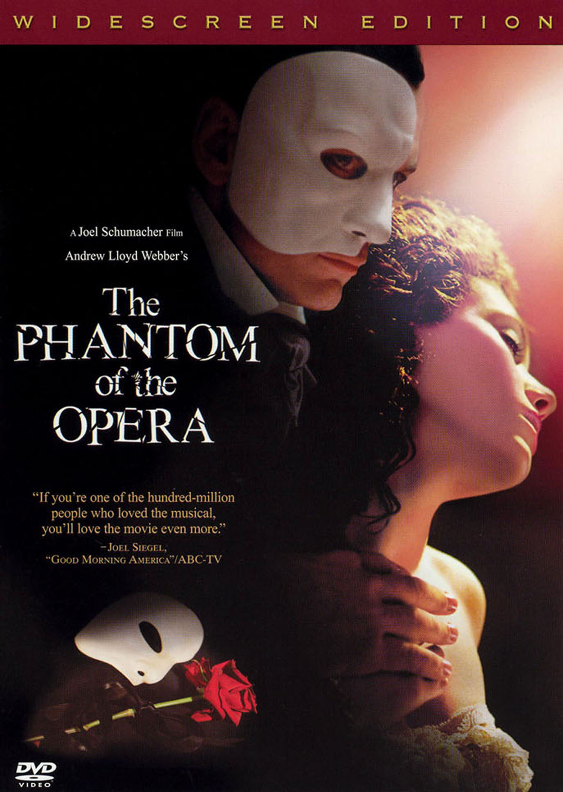
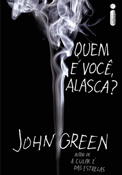
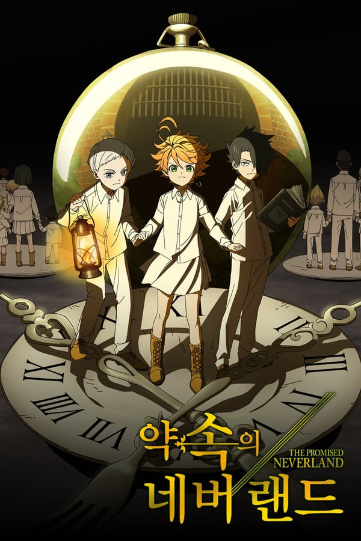
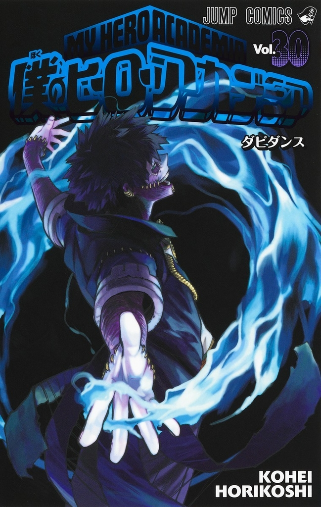

O Fantasma da Ópera
Ópera, mistério e uma pitada de angústia, essas são as palavras que definem nossa trama supracitada, um classico dos teatros que arrasa corações até hoje, O fantasma da Ópera é, com certeza, um filme que deveria ser visto por todos!
Fantasma da ópera também é um dos meus favoritos, então esperem coisas boas dessa resenha hihi. Venha conhecer um pouco mais desse filme!
Go Read


Quem é você Alasca?
Esse livro, aaah esse livro... Você apaixonado por romances ou não, tenha total certeza de que ia sair arrasado e completamente apaixonado por essa belissíma obra de John Green depois de ler. Quem é você Alasca é um livro que vai te fazer enxergar a vida de outra maneira, de forma mais livre e ao mesmo tempo dura como sempre foi. E eu espero que sinta arrepios, assim como eu senti!
Go Read

The Promised Neverland
Um belissímo orfanato que cuida de crianças até seus 12 anos, com uma rotina calma é desmascarado após uma menina ao ser adotada esquecer seu bichinho de pelúcia, e agora, eles precisam bolar um plano para fugir dali vivos. Uma trama muito bem feita, que te deixa com pulgas atrás da orelha (se você tiver uma hehe).
Eai, preparado para conhecer seus pais adotivos? :)
Go Read

Boku no Hero Academia Vol. 30
Para tudoo! Precisamos falar sobre esse volume sensacional de BNHA, sério, eu estou impressionada com a trajetória da história até aqui, ouvi muito sobre esse volume e resolvi ler, e agora trago para vocês também! A descoberta do passado de um vilão deveras aclamado (e que não foi tão surpresa assim).
Sem mais delongas, vem ver tudo sobre essa triunfante revelação e surtar comigo hahaha!
Go Read